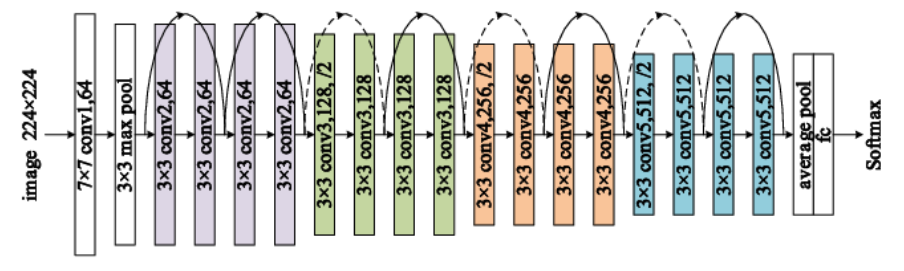

ResNet
Table of Contents
1. ResNet
https://arxiv.org/pdf/1512.03385.pdf 2015/12, msra
1.1. Overview

以 ResNet-18 为例:
- 18 指一共 18 层
- 输入为 224x224x3 的图片
- conv1: 7x7 conv,64,/2 加一个 3x3 max pool, /2, 输出为 224/2/2=56x56x64
- conv2_x: (3x3 conv, 64, /1 * 2) * 2, 输出为 56x56x64, 共 4 层
- conv3_x: (3x3 conv, 128 * 2) *2, 其中 第一层的 stride 为 2, 其它层为 1, 输出为 28x28x128, 共 4 层
- conv4_x: (3x3 conv, 256 * 2) *2, 其中 第一层的 stride 为 2, 其它层为 1, 输出为 14x14x256, 共 4 层
- conv5_x: (3x3 conv, 512 * 2) *2, 其中 第一层的 stride 为 2, 其它层为 1, 输出为 7x7x512,共 4 层
- fc: 首先一个 (7x7 avg pooling), 输出为 1x1x512, 然后一个 (512, 1000) 的 fc, 输出为 1000, 然后一个 softmax
共 18 层
conv{2,3,4,5}_x 四个 layer 结构类似:
- 每个 layer 都包含两个 block
- 每个 block 包含两个 3x3 conv.
conv{3,4,5}_x layer 的 block_0 的 conv_0 为 (3x3, input*2, /2), (H,W) shape 减半, output_channel 倍增
其它 conv 均为 (3x3, input, /1), 即 output shape 保持不变
- 每个 layer 的第一个 block 的 input 需要通过一个 (1x1, 2*input_channel, /2) 的 conv 转换以后再和 block 的 output 相加, 保持 shape 一致. conv2_x layer 除外, 因为它的 block_0 的 input 与 output 大小相同
- 其它 block 的 input 直接加到 block 的 output 即可
上图中, 虚线的 shortcut 表示 block input 需要先经过一个 (1x1 conv, 2*input, /2) 处理后再加到 block 的 output 上, 因为 shape 不匹配无法直接相加
实线表示 shortcut input 可以直接加到 block output 上
相同的颜色表示同一个 layer, 除了 conv2_x, 其它 layer 的一个 conv 的 stride 为 2, 且 output_channel 倍增
1.2. 不同大小的 ResNet
所有 ResNet 均包含四个 layer, 每个 layer 有 N 个不同的 block, block 之间有 shortcut connection (或者叫 skip connection)
根据 block 的类型和个数, 有 18, 34, 50, 101 和 152 几种不同的配置.
18, 34 使用的 block 包含两层 conv, 称为 basic block
大部分 conv 的 stride 为 1, 只有两个 layer 交界处的 conv 的 stride 会是 2, 相应的其 output_channel 会变成 input_channel 的两倍
1.2.1. bottleneck
50, 101, 152 使用的 block 包含三层 conv, 称为 bottleneck
bottleneck block 把 basic block (3x3,output_channel; 3x3, output_channel) 变成 (1x1, output_channel/4; 3x3, output_channel/4; 1x1, output_channel)
resnet 的 bottleneck 是先用 1x1 减小 channel, 然后 conv 完再用 1x1 增大 channel, 以减小计算.
Backlinks
ENet (ENet > Network > bottleneck): bottleneck 类似于 resnet 的 bottleneck 结构, 做了一点修改:
MobileNetV2 (MobileNet > MobileNetV2): MobileNetV2 引入了 ResNet 的 bottleneck, 但做了一点修改, 称为 `linear bottleneck`
1.3. 示例代码
class BasicBlock(tf.keras.Model): def __init__(self, in_channels, out_channels, strides=1): super(BasicBlock, self).__init__() self.conv1 = tf.keras.layers.Conv2D( out_channels, kernel_size=3, strides=strides, padding="same", use_bias=False, ) self.bn1 = tf.keras.layers.BatchNormalization() self.conv2 = tf.keras.layers.Conv2D( out_channels, kernel_size=3, strides=1, padding="same", use_bias=False, ) self.bn2 = tf.keras.layers.BatchNormalization() """ Adds a shortcut between input and residual block and merges them with "sum" """ if strides != 1 or in_channels != out_channels: self.shortcut = tf.keras.Sequential( [ tf.keras.layers.Conv2D( out_channels, kernel_size=1, strides=strides, use_bias=False, ), tf.keras.layers.BatchNormalization(), ] ) else: self.shortcut = lambda x, _: x def call(self, x, training=False): out = self.bn1(self.conv1(x), training=training) out = tf.nn.relu(out) if training: out = tf.nn.dropout(out, 0.1) out = self.bn2(self.conv2(out), training=training) out = tf.nn.relu(out) if training: out = tf.nn.dropout(out, 0.1) out += self.shortcut(x, training) return tf.nn.relu(out) class ResNet(tf.keras.Model): def __init__(self, block, num_blocks, num_classes=512): super(ResNet, self).__init__() self.in_channels = 32 self.conv1 = tf.keras.layers.Conv2D( 64, 3, 1, padding="same", use_bias=False, ) self.bn1 = tf.keras.layers.BatchNormalization() self.layer1 = self._make_layer(block, 64, num_blocks[0], stride=1) self.layer2 = self._make_layer(block, 128, num_blocks[1], stride=2) self.layer3 = self._make_layer(block, 256, num_blocks[2], stride=2) self.layer4 = self._make_layer(block, 512, num_blocks[3], stride=2) self.avg_pool2d = tf.keras.layers.AveragePooling2D(7) self.linear = tf.keras.layers.Dense(units=num_classes, activation="softmax") def _make_layer(self, block, out_channels, num_blocks, stride): strides = [stride] + [1] * (num_blocks - 1) layers = [] for stride in strides: layers.append(block(self.in_channels, out_channels, stride)) self.in_channels = out_channels return tf.keras.Sequential(layers) def call(self, x, training=False): out = tf.nn.relu(self.bn1(self.conv1(x), training)) out = self.layer1(out, training=training) out = self.layer2(out, training=training) out = self.layer3(out, training=training) out = self.layer4(out, training=training) out = self.avg_pool2d(out) out = tf.keras.layers.Flatten()(out) out = self.linear(out) return out def ResNet18(nclass): return ResNet(BasicBlock, [2, 2, 2, 2], num_classes=nclass)
Backlinks
Attention (Attention > Transformer > Add&Norm): - Add 是 ResNet 中的 skip connection - Norm 是 Layer Normalization
DeepLab (DeepLab > DeepLabV3 Network): 1. block{1,2,3} 都是 resnet 的 block, 并且通过指定 stride = 2 达到 downsample 的 效果, 所以 output stride 依次是 4, 8, 16
ENet (ENet): ENet 做为一个 semantic segmentation 模型, 基本就是一个标准的 encoder-decoder 结 构, 并且参考了 ResNet 和 Inception 的设计
Image Classification (Image Classification > ResNet): ResNet
MobileNetV2 (MobileNet > MobileNetV2): MobileNetV2 引入了 ResNet 的 bottleneck, 但做了一点修改, 称为 `linear bottleneck`
PSPNet (PSPNet > Network > backbone): pspnet 使用 ResNet 50/101 做为 backbone 生成 feature map
UNet (UNet > Network): 2. 灰色的 `copy and crop` 类似于 resnet 的 skip connection, 但使用的是针对 channel 的 concat 而不是直接相加. 另外, 因为 concat 的两部分的 shape 不一致, 所以需要把大的 crop 成小的
Vgg (Vgg > Very Deep Convolutional Networks): 当然 16 层的深度与 152 层的 ResNet 相比还是小很多. vgg 之后, 更深的网络因为梯度 消失的问题无法工作, 才有了 ResNet.